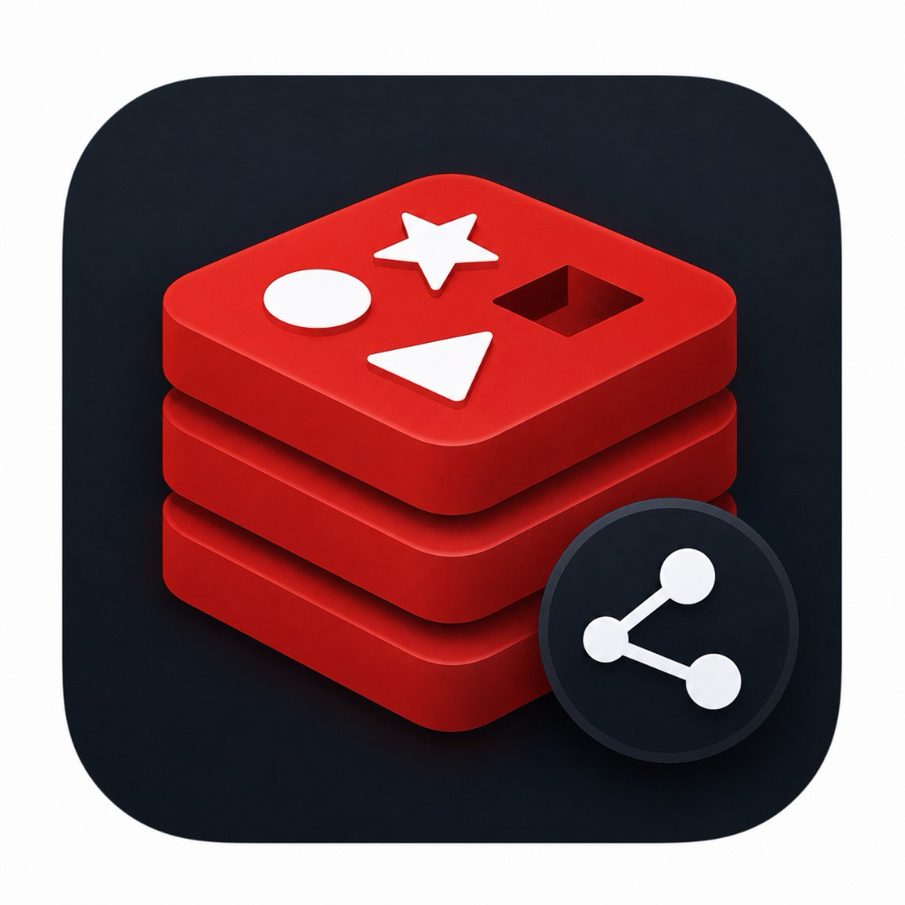

多服务同时在线
本地、测试、生产多实例并行管理，一键切换数据库，连接配置本地加密保存。

Redis ManagerRedis Manager
多连接桌面客户端：冒号分层树、批量删除、多类型值与 JSON 结构查看，开箱即用。
当前推荐：Apple Silicon · v1.0.0
本地、测试、生产多实例并行管理，一键切换数据库，连接配置本地加密保存。
demo1:demo2:demo3
自动展开成树形层级，扫描用 SCAN，生产库也能安心浏览。
勾选 Key 或整夹批量删除；string / hash / list / set / zset / stream 支持 JSON 结构展开。
首页直达安装包，版本 1.0.0